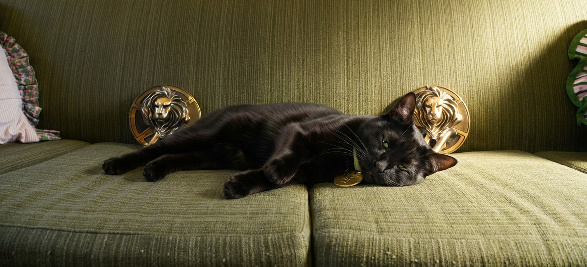

The brief was a fun one: an undisclosed client needed help visualising a script featuring a black cat wandering through their office. All they had were photos of the space and a modest budget that ruled out traditional VFX.

I proposed a generative AI fix. Rather than settling for generic stock or basic compositing, I built a bespoke pipeline in Runway Workflow using a series of custom nodes designed to integrate the cat consistently across different shots, lighting conditions and environments. Crucially, this meant the team could have their actual workspace in the film, something they'd assumed was well outside their budget.
Character consistency was a key consideration throughout, with specific nodes built to keep the cat feeling like it belonged in every scene rather than just passing through. Once all the clips were generated I handed them over to the editor to cut as they saw fit, and they were delighted with the results.
A polished, characterful piece delivered at a fraction of the cost and timeline of a traditional VFX pipeline.
Agency: adam&eveDDB
Creative: Ted Heath & Paul Angus
Photographer: Sam Barker
AI Prompting & Workflow: Richard Bailey
Retouching: John Webb & Andy Nutt
Producer: Lee Bryan
Account Team: Tejan Shan & Livia Von Tucher